Busca com filtros
Filtre por bairro, preço e comodidades e encontre kitnets que combinam com o que você procura.
Busque, compare e fale direto com o locador. Uma forma prática e transparente de encontrar moradia em Tucuruí.
Saiba como funciona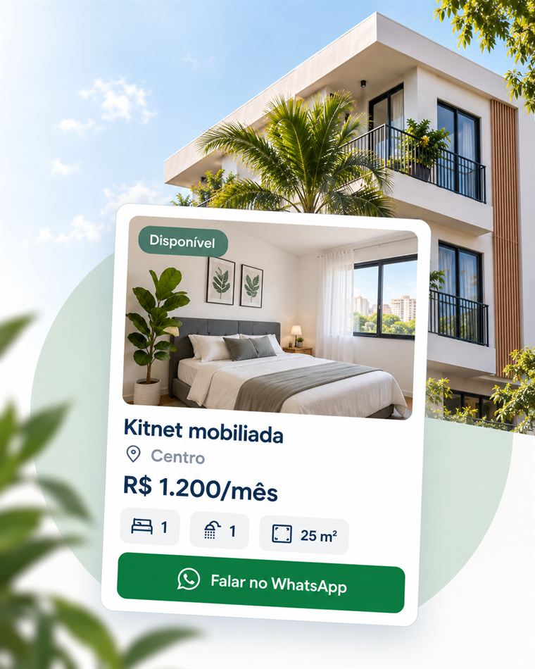
Filtre por bairro, preço e comodidades e encontre kitnets que combinam com o que você procura.
Cada anúncio traz fotos, preço, localização e disponibilidade claros, para reduzir o risco de golpes.
Fale direto com o locador, sem intermediários e sem chat interno dentro do site.
Confira as kitnets disponíveis agora. Anúncios com o selo "Imagem por IA" são exemplos ilustrativos, feitos por inteligência artificial.
Na página Imóveis, você filtra por bairro, preço máximo e comodidades, e vê na hora quantas kitnets combinam com a sua busca — sem esperar resposta de ninguém.
Ver imóveis disponíveis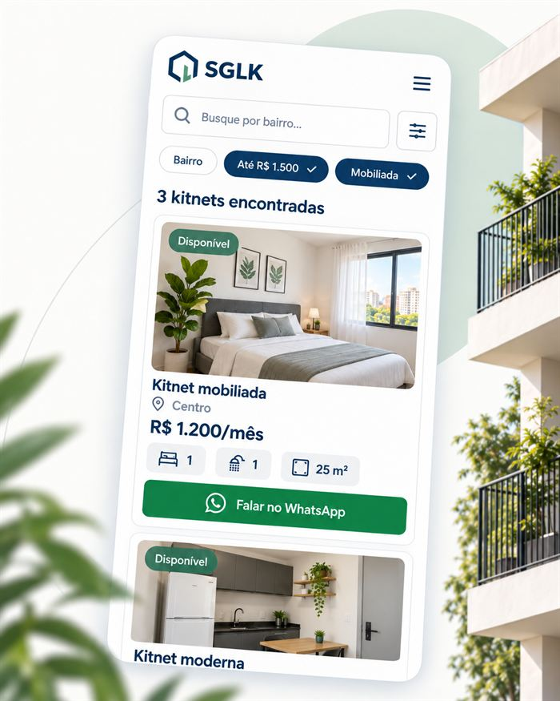
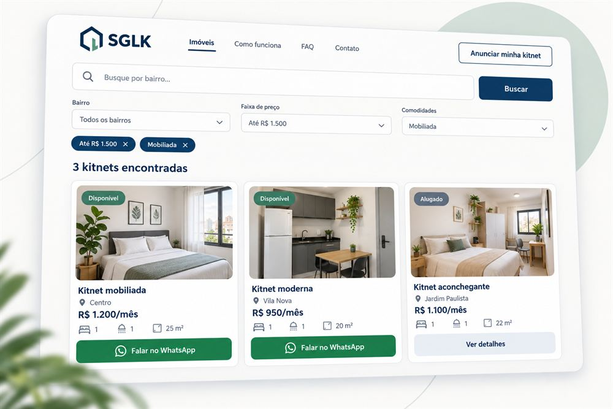
O SGLK é um site responsivo: você busca, compara e fala com o locador direto pelo navegador do celular, sem precisar instalar aplicativo nenhum.
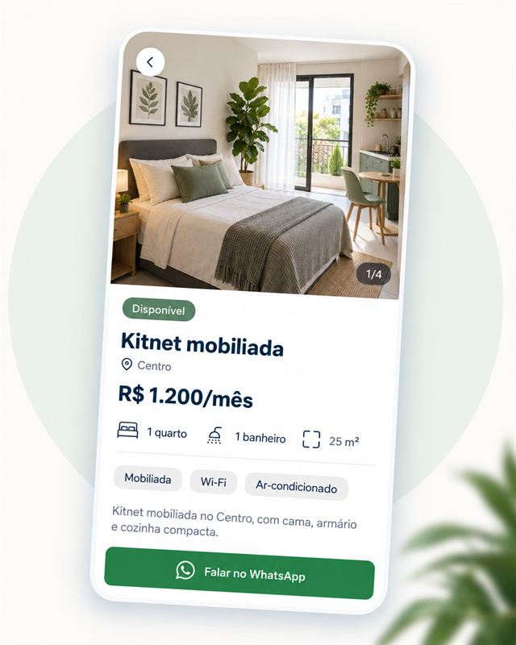
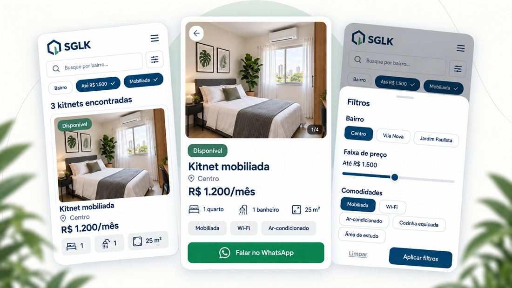
Uma kitnet costuma ser o primeiro passo: sair de casa para estudar, começar um trabalho novo ou simplesmente ter um espaço só seu em Tucuruí. O SGLK existe para tornar essa busca mais simples.
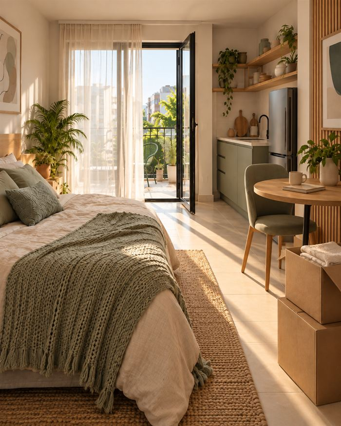
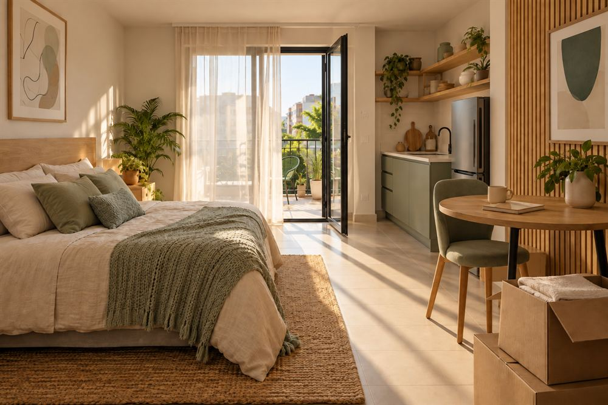
Três passos simples para encontrar sua próxima kitnet.
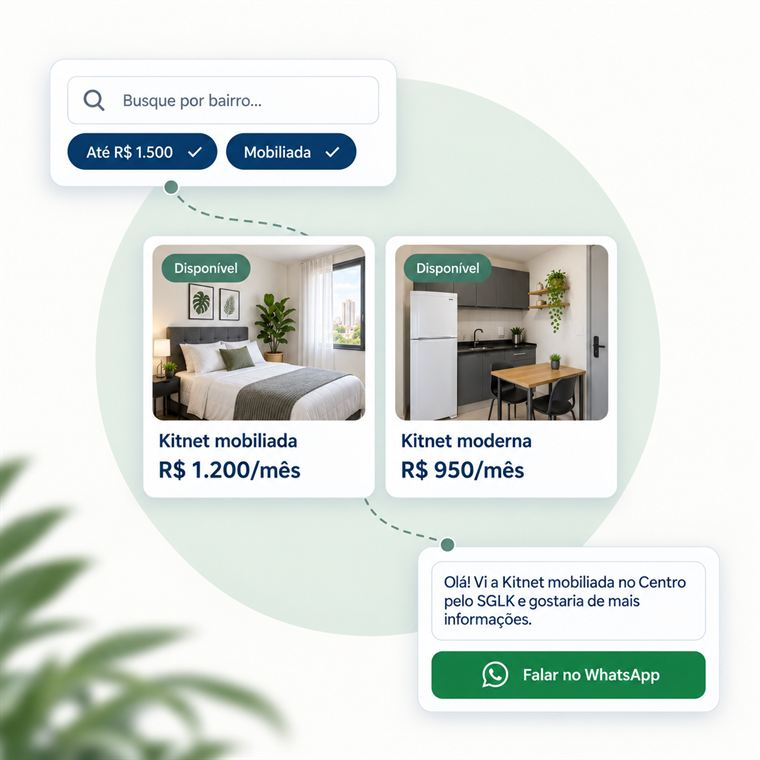
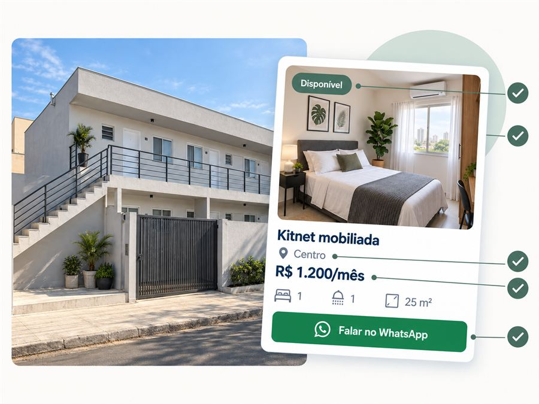
Cadastre fotos, preço e comodidades, e atualize a disponibilidade sempre que quiser. Você recebe os contatos direto no seu WhatsApp.
Anunciar minha kitnet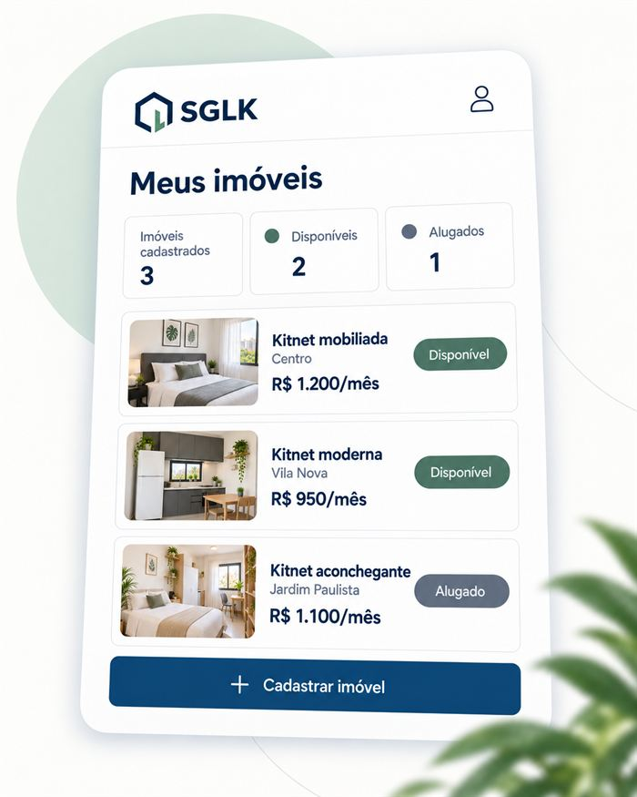
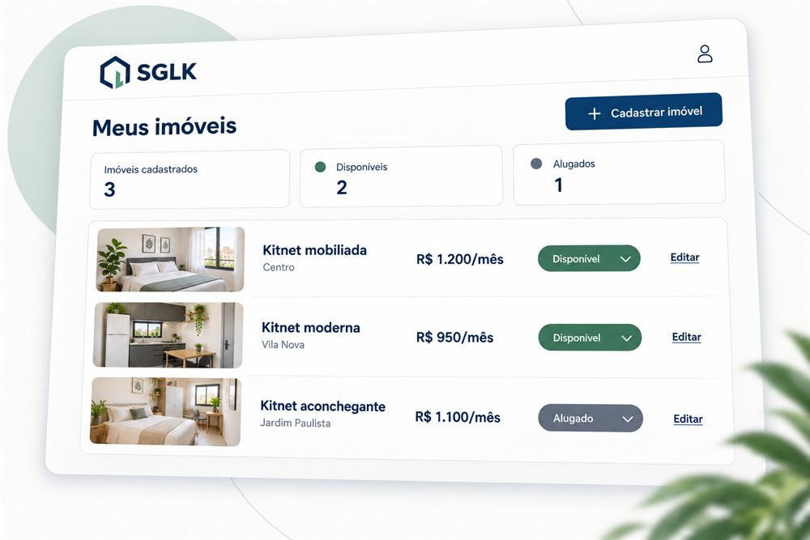
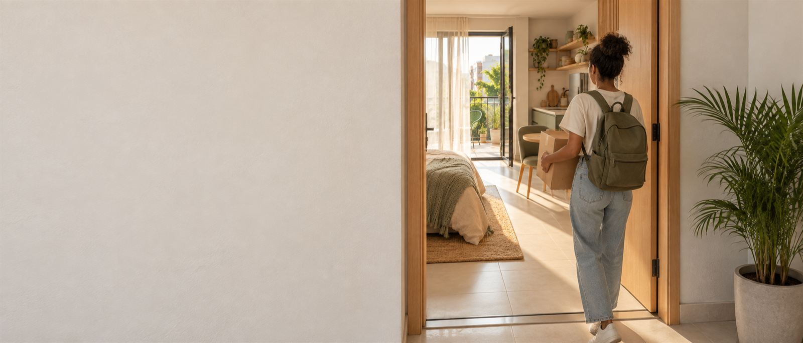